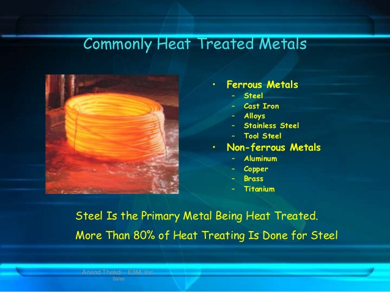

- MATERIAL SCIENCE AND MATALLURGY
- subject code-402

unit-1
crystal.
the inter atomic forces that bind the atoms togather. these inter-atomic bonds are primary of two kinds: primary bonds and secondary bonds. lonic,convent and metalic bonds .Ionic,convent.Crystals come in all different shapes and sizes. However, the purest and cleanest crystals are usually also the ones that grow to be the largest in size.viewpage
unit-2
plastic deformation
Some plastics undergo an unusual transition, from a hard, glassy state to a soft, rubbery state, with increased temperature. For this project, you should do background research on the effects of temperature on different types of plastics. Make sure that you understand the difference between thermosetting and thermoplastic polymers.viewpage
unit-3
alloy formation and binary digram
In this review, we introduce the current state of the art of the growth technology of pure, lightly doped, and heavily doped (solid solution) nonlinear gallium selenide (GaSe) crystals that are able to generate broadband emission from the near infrared (IR) (0.8 µm) through the mid- and far-IR (terahertz (THz)) ranges and further into the millimeter wave (5.64 mm) range. For the first time.viewpage
- 
unit-4
heat treatment of alloy
Heat treating is a group of industrial and metalworking processes used to alter the physical, and sometimes chemical, properties of a material. The most common application is metallurgical. Heat treatments are also used in the manufacture of many other materials, such as glass.viewpage

unit-5
properties of material
A property may be a constant or may be a function of one or more independent variables, such as temperature. Materials properties often vary to some degree according to the direction in the material in which they are measured, a condition referred to as anisotropy. Materials properties that relate to different physical phenomena often behaveviewpage